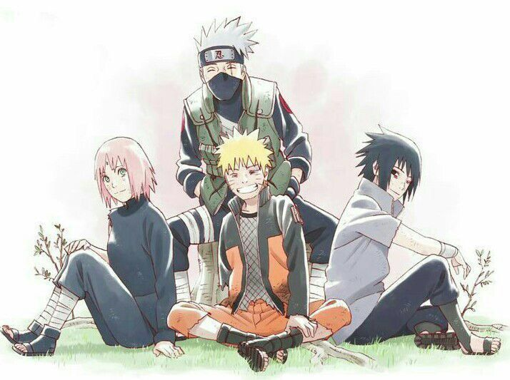
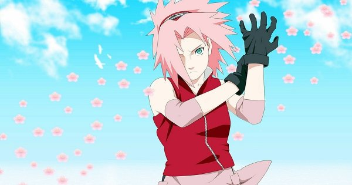
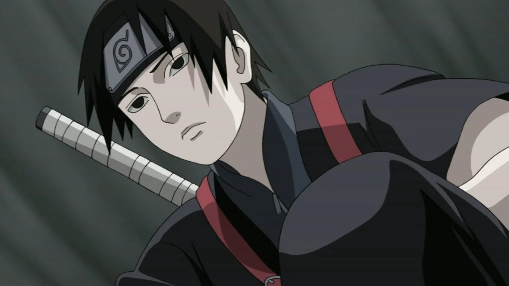

Naruto Uzumaki
Naruto é um mangá criado e ilustrado por Masashi Kishimoto. O título conta a história de Naruto Uzumaki, um garoto órfão que carrega dentro de si a Raposa Demônio de Nove Caudas e que tem o sonho de tornar-se o Hokage, ou seja, o ninja mais forte da Vila na qual ele mora.
A história da obra é dividia em duas partes: a primeira retrata da formação de Naruto na academia ninja até a partida de Sasuke da Vila da Folha. Já a segunda parte começa dois anos e meio após a primeira. Nela, temos a busca do Time 7 por Sasuke, a luta contra a Akatsuki e, finalmente, a Quarta Guerra Ninja.

Equipe Kakashi (Time sete)
É a primeira equipe aprovada e formada por Kakashi Hatake no qual, os membros é formado por Naruto Uzumaki, Sasuke Uchiha e Sakura Haruno que é a única integrante do grupo femina.
Compre agora
Sasuke Uchiha
Sasuke é o único sobrevivente do clã Uchiha, após a morte do seu clã vive em busca de vingaça e deseja restabelecer o seu clã e matar um certo alguém.

Sakura Haruno
A menina do time sete, mais conhecida como frágil e sentimental do grupo, apaixonada por Sasuke, a evolução de Sakura será totalemnete diferente e inesperada no anime.

Sai
É um personagem que chegou para fazer parte do time sete, após um dos integrantes sair da vila no qual, foi conquistando o corações das pessoas aos poucos.

Kakashi Hatake
É o sensei do time sete, no qual ajuda em missões e batalha extremamente importante para o crescimento e desenvolvido dos seus alunos no anime, no qual é muito conhecido por ser o ninja que copia.